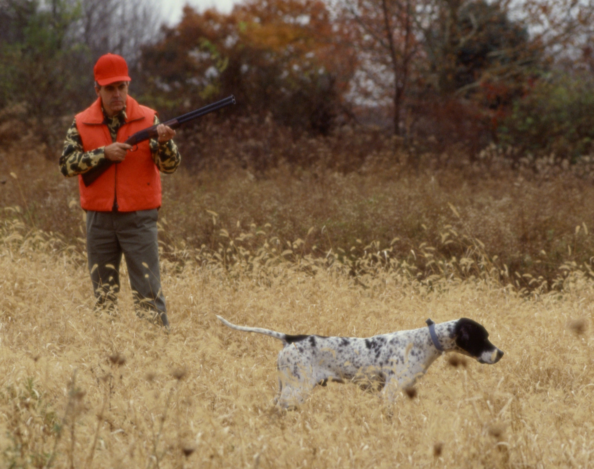

Episode 4 · May 14, 2023 · 2463
Pointing dogs and pigeons...the best match made in heaven for training?

About This Episode
In this episode we talk about the importance of having birds for your pointing dog and why homing pigeons are a great training tool. We also discuss how to build a homing pigeon coop and how your pointing dog thinks. If you are training your own pointing dog or just love pointers in general we hope that you will like this episode
Questions about the training topics in this episode? Tyce works with bird dog owners and hunters through Utah Bird Dog Training. Reach out to work with him directly.
Resources & Links
- Utah Bird Dog Training — Work directly with Tyce — professional bird dog training services in Utah.
Transcript
Full transcript for Episode 4: Pointing dogs and pigeons...the best match made in heaven for training?.
Tyce
Hey everyone. Thanks for tuning in today to the Bird Dog Podcast. I'm your host, Ty Erickson, and thanks for listening. Thanks for being with us. appreciate you spending some time here and hopefully today's episode we can, share with you some, some information that will be useful to you and, help you have a better bird dog and be a better bird dog trainer.
Today what I want to talk about is actually, building yourself a homing pigeon pen. So now if you're a pointer guy, you're gonna wanna listen. If you're a retriever guy, it's up to you. So with a pointing dog, you need birds. that's why I'm gonna talk about having homing pigeons and utilizing them in your training and the benefit or the value that they are.
So with your flushers, your retrievers, or just your flushing breeds in general, you don't need homing pigeons. You can go and use some clipping pigeons, you can. Get some chucker, get some pheasants for training, whatever you're using. It doesn't really matter a whole lot, to a point what birds you're using because a flusher, we don't care if it really, if it catches a bird. because essentially a flusher, that's all they're doing.
They're, they're trying to catch a bird and they flush it into the air. And, you're shooting that bird when that dog gets that bird into the air. And so it doesn't really matter, but appointing dog, we want them to point the bird. So and so that means a lot of your pointing dogs.
I'll backtrack here. A lot of your pointing dogs, if you just put a pigeon out in the field, And let's see, a dizzy, a pigeon. Be a dizzy it too heavy, and the pointing dog goes in and catches the bird. Well, you're awarding that behavior.
So we want to teach the dog to be successful as a pointer. To get a bird in your mouth, you need to point it. And then only then will you get a shot bird in your mouth. homing pigeons work good because they're reusable. That's number one.
They're cheap cuz they're reusable. You use 'em time and time and time again. And what we want that dog to understand is when if that dog gets close to that bird, the bird flies away. Just like in the wild.
If you are running a dog on wild bird, if it gets close to the bird, the bird flies away. And so the wild birds teach a dog not to crowd birds. Homing pigeons are nice. But what you want with the homing pigeon is you want, obviously the pigeons and you want some releases so you can time the flush.
Now, if you live in a place where man, you have tons of wild birds, and you can go out and you can run that dog, on those wild birds and use those birds to educate your dog, then you're gonna then you can kind of do it that way. But most people don't have access to that many wild birds, or they live in a location where they would have to travel, you know?, large distances, but a lot of people do have maybe some fields around their house or on the outskirts of town or something like that. That may be just a 2, 3, 4, 5, 10 minute drive where they could take some pigeons and they could work their dog. They're pointing dog on, some birds.
So again, I'm talking to those people that have a pointing dog. They want to be able to have their dog. Point birds and be able to have reusable birds. And that's where the humming pigeon comes into play. when it comes to the humming pigeon pen, I think probably a lot of people think it's overwhelming.
To have some pigeons. And when I say homing pigeons, you don't even need special pigeons. You can use, you can catch barn pigeons from under the overpass or mixed breeds, rollers, homers, wild feral pigeons, whatever, and they will all home, to a pen. Some of them will fly further distances, better on their own.
And so, if you're working with pigeons that you're trying to fly long distances, then yeah, you could look at trying to get some, Pigeons that are purebreds better homing pigeons that'll fly further distances. So I would say that does depend on, let's say you're trying to fly, the pigeons probably farther than a mile. Then you may want to go with something that's has better genetics for homing back to a pen. But if you're just have a pen and it's at your house and there's a filled behind your house, You can get away with whatever pigeon you want.
And the reason I say that is cuz that's what I do. I have all sorts of types of pigeons and they home, pretty good distances. We probably don't fly 'em much more than two miles, from their pen and they return back no problem. one, don't get caught up in, you need super special homing pigeons. Some people say don't fly a pigeon or don't let out a pigeon if it has been flown before.
We've bought pigeons from people that have flown before and we keep 'em in. Let's say, I think if you keep 'em in your pen for about three months or more, they have food, they have water, they have nest spots. I'm gonna most likely say those birds are gonna come back to your pen. So again, if you wanna speed up that process, you can sometimes home pigeons, I'd say within a month's time period.
And what I would do in that situation is build yourself a coup. And then what you want to start doing is getting those birds outta your coop. And what I like to do is catch all the birds in your pen, take 'em outside and walk them, put 'em in your hand and walk them to your landing pad. And then push 'em through the bars that go into your pen.
We'll talk about kind of a pen build here in a minute. But again, if you take those birds every day and you kind of walk 'em from let's say, 30, 40, 60 yards out from your pen, and walk 'em so they can see the pen, see the surrounding, see where they're gonna land, see where they're gonna go in and actually train your birds where the entrance is to your homing pigeon pen. When you let those birds out, they're gonna stick around a lot easier compared to if you just have your birds in your coop and then all of a sudden you just let 'em all out one day and hope they come back, your chances are gonna go down greatly just because they haven't been out around your pen, they're not comfortable with the surroundings, they don't know what it looks like. And if you just all of a sudden open the main door and let 'em all out, you're probably not gonna have a huge return on your birds.
So that being said, when you build a coup what you can do is just basically build a box. You can take some four by eight sheets of plywood, frame four walls together. You could make it eight feet high. So a four by eight piece of plywood.
You turn it up. And let's say you do two of those. You could do an eight by eight, just a eight foot tall by eight feet long, by eight feet wide. You know, just a basically eight foot tall box that's eight feet wide.
You can do that. Or if you want to go even longer, you can go, eight feet. Eight feet, eight feet. So you can go 24.
So 4, 8, 16, you could go 16 feet long, eight feet high, and it's really easy to throw together because you're just, you're D dealing with four foot wide by. Eight foot long boards. But if you put those upright and then just frame 'em in, and then you have a box, and then whatever you wanna do on the roof, you could do an A-frame roof or you could do a flat roof and then take some metal roofing and slope it a little bit so when the water hits on top, it slopes off one side. You know, put a two by six or something like that for supports.
But you can throw up if you get everything measured out. Get some screws a, in a drill. I mean, you can put something like this together in a day's time and in under three, 400 bucks and that's really gonna save you a lot of money if you're buying pigeons. Pigeons, right now, they've gone up on price.
On average, you're probably paying five to $8 a bird. Occasionally you can find 'em cheaper. These are gonna be kind of feral pigeons sometimes people getting rid of, homing pigeons. If you start putting a lot of birds over your dog and your dog's just pointing them and they're just flying away back to the guy's house or to no man's land, you're gonna lose a lot of money.
So a pigeon coop can definitely, help you out and also save you some money in the long run. Plus, it's fun cause you got a fresh supply of birds for your pointing dog. once you got your coup built, and honestly it can be pretty much a shack or you can again just build a nice square box. You're gonna want to put some, Nest box in there, and that could just be some little square boxes. there's plenty of stuff on the internet about pigeon nesting. You get these pigeon bowl things they can lay their nest in.
But they basically just, if you think like under an overpass, their own buildings, they find a little crack and they'll put a nest in there. So I've seen people use five gallon buckets and put 'em on their side and stick 'em in there. Just build some nest boxes that they can nest into. Pigeons, kind of being in that dove family.
I don't use straw. I don't put straw in their pens. I. I've heard that straw being hollow parasites or bugs can kind of barrel in the center of the straw and, and bird mites or whatever the bugs are that pigeons can get.
So what you want to use is more twig material, you can do some, try some pine stuff, see if pine needle branches, see if they'll use that. But I'll take tumbleweed material that works good if you can grab some tumbleweeds and kind of break it up in pieces and throw it in their pens or little sticks. Stuff like that. They're gonna take that material and, and make a nest and they're so prolific.
They'll even, just lay on the ground in the dirt and build an nest if they don't have a spot to, nest in. So you definitely wanted to make it a home for 'em. And then of course you want always water and food in there for 'em. You can go higher protein game, bird feed, or you can just go down to like a chicken scratch.
And that's pretty much what I generally do is just a scratch food and. Birds seem to do fine on it. They fly good, they raise babies. If your birds end up let's start off with a dozen, and you end up with two, three dozen, you're like, man, I'm, I don't need these many pigeons.
And then you can take 'em out and actually hunt 'em and shoot 'em if you want, or you can. Sell 'em or do whatever or give 'em to your buddies They'll keep reproducing. A pigeon its eggs, only take 14 days to hatch. If you get a pair of pigeons, they're gonna start laying eggs and, and offspring pretty quick and start multiplying.
So they're a great bird for that. When it comes to your coop, you're gonna want an entrance that sits up generally a little higher, maybe. Chest height or something around there. You don't want it real loaded the ground where they're gonna land cuz cats can maybe reach 'em, or predators can jump up and get into your pens.
So you want that entrance into your coop to be a little higher up. so those birds can land and then get into the coop safely. And then what you'll need is, you can even buy 'em online, but it's basically a pigeon door and maybe some of you've seen it, but it's basically you have bars that hang down vertically. The birds can push in and slide through those bars or push on those bars and go into the pen, but when they push against them, those bars don't allow the bird to leave the pen. So we only want 'em to come in but not be able leave out.
So cuz we want those birds to obviously your dog to point 'em, fly back to the pen, go in the pen, and then stay there until you're ready to use them. Another way to, help your pigeons come back to your pen is you want to, not only like grab 'em, walk 'em to your pen. Another option you can do is you can open up your bar doors well I'll kind of. Backtrack here, you can build a wire pen on the platform.
So what you want is a little platform where the birds can land and then go into the bars and into your coop. And that platform just is basically, you can just have a piece of board with some supports, maybe it's 12 inches wide by 24 inches long, that they can just land and then walk in, and jump in through those bars. And here, And your homing pigeon, pen. but you could build, I've built before like a little wire cage and then open the bars and have them open so the birds can actually fly out, come from inside the pen and walk out onto the platform. Kind of look around, get their bearing straight on their own.
You can put some food up there so they can jump up there and kind of feed around. And this is all kind of preparatory to, letting your pigeons out for the first time. I don't think you necessarily have to do this, but it wouldn't hurt. Then also, what you can do your birds have been in there for at least a month.
They're, they seem to be pretty settled, and you're like, I'm gonna, I'm gonna risk it. And see basically if you have a bird come back, you're gonna be golden after that. If they fly away, they're gone. you're gonna lose generally a percentage when you're establishing a new coup, but the longer they're there, And the more you kind of baby step it training 'em to the pen, you're gonna have higher success rate of those birds coming back, for yourself. But one thing you can do is just open the bars that allow 'em to come in and, and just let the birds kind of come and go.
That's, that's another way instead of taking the birds and opening up the main door or letting 'em go outside the main door. You could do that, open it up for a few days, let 'em kind of come and go. There's food there. So they should kind of go out on their own, kind of get their bearings and then come back in and then you can shut your bars back down and then the birds should continue to come.
They know how to get in and out. those are some kind of some tips to get your birds back. Another thing I've done is after I've trained them a bunch of days maybe a couple weeks grabbing those birds each day, walking 'em to the landing pad, you can take the bird and then just let it go outta your hand. And, and, usually they'll fly up on top of the coop right there, not fly far and kind of get their bearing straight. but most like what I'd probably do is just open the door, open the bars, have 'em up. Let the birds kind of come and go in and out on their own.
And then after that, shut it down. And then once you feel like you've seen birds kind of coming and going a little bit, then I would take some of the birds, not all of 'em. I'd take a handful of 'em and maybe keep track and then walk right outside your coop and then let 'em go. And then they fly over to your coop or fly around and land, and then they hear the other ones talking inside.
Then they'll work their way back and, and, Then you're kind of off to the races and then, then you can go a little further out and let 'em go and they'll go back. But they do have a homing kind of beacon inside 'em. So they, they figure it out pretty easy. You don't have to get too crazy with, really training them, but obviously the more time you spend training, probably the lower percentage you're gonna lose.
But anyhow, some people think with their pen, I can't do a pen. And you can again, make the footprint pretty small. You could have six to eight birds and build a pretty small coop maybe four feet wide by four eight feet tall or something like that. and you could just put it in the back of your yard. you know, he probably. There's some cities I'm sure that have different restrictions on pigeons.
You may wanna look into that. you know, so your neighbors don't complain. Again, probably if you don't have a lot of 'em, people probably won't complain. But if you have four dozen birds, you're flying 'em all over and they're making a mess then you might have some complaints. So I think as long as your birds aren't making a mess, aren't making a ton of noise, most people won't really care if you have some pigeons flying around here and there.
But if you're in a spot in a yard or in a place or a town home or a condo or something like that where you can't, build a pigeon coop, then what I would do is just go find a nice field or an area that man you have access to, to work your dog. And then maybe there's a vacant lot or something like that, and you hit up the owner of the lot and say, Hey, do you mind if I put a little pigeon coop back here? I'm working my dog. If it ever becomes an issue where you sell the property or need it out of there, I can just, I can pick it up and move it and obviously if you have a coop that's not that big, you can do that pretty easy, or if you have a buddy that has, some land or something like that, maybe hit him ups.
If you could put a coup, in the back of his yard or in the back of his field or something like that, then you're gonna have, Access to those fresh birds, but just because you maybe live in a location where you can't, think outside the box. You know, find a place that maybe you rent a spot, maybe talk to a guy and say, Hey, can I pay you? 20 bucks a month and let me keep a pin on your vacant field and let me work my dogs. So anyhow, so think outside the box. There's lots of places and lots of ways that you can get some birds. once you have your birds you're gonna want a release, or a bird launcher of some sort.
You really can just get away with one of 'em. In the beginning. If you have multiple ones, it's gonna make it a little easier. You can run the dog longer before you have to obviously reload them. but once you got your birds, they're going back to your pen, good.
Then you're basically gonna simulate a wild bird. I've seen dogs. They don't even have to know the whoa command, and you can just let the birds teach 'em. I mean, you don't have to put 'em even on check cord.
You're gonna want some control of some sort. So if the dog's not, collar conditioned, or the obedience isn't overlaid with the e collar, Then you will want to check court or something, a little bit of control. So when you call your dog to you or it doesn't run off and get hit by a car or just take off indefinitely or something like that. So ideally at least the recall, the hear command or come command or whatever you use.
You've overlaid that with a or, and so you can call the dog back to you if he starts running away or running towards traffic or chasing a bird Then basically you're gonna take your, your pigeons, get a bird bag, something like that. You can put 'em in a little crate, put 'em in your truck. Then you'll walk out. Put your bird launcher or your release in the field.
Give your dog a search command. Hey, hunt 'em up. Find the birds, whatever one you want to use. Just be consistent and then bring that dog down, wind, of your pigeon that's in your release.
And, and when that dog starts smelling that bird and starts moving in on that bird, just like a wild bird, push the button and get that bird into the air. and then what you'll see is, All the point is, is a pause before the pounce. So it's a prolonged pause before the pounce. So if you take your hand and you're like gonna catch a fly, you'll see a lot of people that go really slow and they'll stop and then all of a sudden they'll try to catch the fly with your hand. That's all a point is, is the dog's sneaking.
He stops. And he jumps in to catch the bird. But the pointing breeds, they genetically have that, that prolonged pause. So when they go in, they stop, they pause longer, and then they jump in and try to get the bird.
And so if you've taught the whoa command, or whatever command you wanna use to tell your dog to not move to hold that position, well when that dog goes on point, you can say, whoa, hey, don't move buddy. That's where I want you. I like that. Good boy.
Whoa. And then you can walk in and produce the bird, and then if the dog stays steady or whatever you're trying to do with it, if you're just trying to steady the wing or whatnot, then you can reward the dog with a dead bird or a tree, or a retrieve of a dead bird or a bumper, or shoot the bird or whatever, or whatever you're going for there. But in the beginning, that dog, I guarantee is gonna, he's gonna go on point, then he is gonna try to go in after the burden as soon as he moves forward. Boom, you're gonna launch that burden into the air.
Then you bring maybe have just one release. Well, you put 'em back in the truck, take the release. You can either run it in the same position and kind of use kind of a magic bush,, training method. You're gonna talk about that.
Or you can move the bird to a different location in the field. Dog smelling around a sudden he smells, that bird starts, starts moving in quickly, boom. Launch that bird into the air and the dog starts going. Every time I rush that bird, it flies away and I don't get anything.
Well, you do it again. Dog goes in on it starts getting sneaky. He's like, oh, that I smell that bird. I know he is gonna fly.
Start sneaking. Sneaking doesn't point yet. Boom. Launch it in the air.
You're gonna, you kind of, you can know when the dog, you'll start noticing when the dog's getting birdy, appointing dog. Usually they'll start creeping, they'll start slowing down and then all of a sudden they'll lock up. Cuz again, it's that prolonged pause before the pou. So once a dog's noses has that scent cone or that, that scent that's blowing across that bird reaches a strong enough level in the dog's nose, he's gonna lock up.
He's gonna be like, oh, I'm close. I don't wanna move. I don't wanna move cause I'm gonna scare that bird. And so you can use that bird to train the dog and the, the flush of the bird, the timing of it.
So basically to kind of make it simple, dog gets close, bird flies away, dog gets close, bird flies away, dog gets close, bird flies away. Boom. Dog locks up. Good.
Whoa. Even if the dog doesn't know
The formal, whoa. Command. You can just use verbal praise and encouragement, and that's lit. You're literally training at the same point.
So when the dog stops and you're like, good, good boy. Whoa, whoa, good boy. Whoa. That dog starts going, oh, Whoa mean is like this, like is what I'm doing right now.
It's a positive thing. Good. Whoa. And they start, they can start figuring it out without even formal training them.
Now, I do still recommend you do a formal whoa training. but if, if you're just like you're just kind of running the dog on birds, you're gonna, at least in the beginning maybe want to start or, or encourage the dog. On the behavior you want. So, whoa, good. When he goes on point, all of a sudden if he moves, you release the bird. and so that dog is learning that his act, his behavior creates a certain action.
So if I move in, the bird flies away. And so, again, to make it simple, if you stay steady, you don't move. And I start walking up to the bird and all of a sudden you move. Well, the bird.
Flies away. You push the button, bird flies away. So the dog's learning that its movement affects the fly to the bird and not necessarily your movement. And so, and so we want to get to that point.
I like to get to the point where he can walk up past the dog. The dog stays there, and then you kick up the bird or you produce the bird. And then, then the dog. If you're just doing steady to steady flight, steady that bird getting up there, then as soon as you get up there and produce the bird, Then you make a big deal about it.
The bird the bird flying releases the dog. You can grab a bird or a bumper and throw that for the dog and reward the dog for it. Cuz now like, Hey, you stayed there. I got up there, produced the bird.
Here's your reward, here's your retrieve. And the dog's like, oh. If I do this behavior, I get this bird in my mouth. Yeah, that's what I want.
And so he starts working with you as a team instead of independently. He's like, if I do this, we get a shot bird. If I flush 'em, we don't get anything. If I hold a point, we get a shot bird.
If I chase the bird, we don't get anything. And if you're consistent, the dog dogs figure that out. Dogs are so reward based and they, they like, they learn so quick. If I, if I sit, I get a treat right When you're doing treat training or if I come to 'em, I get a treat.
So just, you want to use that reward training to to help train that dog, to show that dog what you want. Okay. Let's say you don't have birds. Let's just say you buy one or two pigeons.
Okay? Well, that's hard to do. These dogs, if you put that bird out, dog gets close, flies away, bird flies away. It doesn't come back.
Okay, well that was kind of waste. Let's say you tie something to the bird. Bird flies up, flutters lands on the ground, dog chases and catches a bird. Well, what did we do?
We just rewarded. The dog's now learned if he flushes the bird and the bird's gonna fly a certain distance and finally it's gonna tire out and he's gonna get on the ground. Well, now you're gonna, you, you're gonna, for sure if you're doing that method, you're gonna want the dog on a check cord. the beautiful thing about having homing pigeons is you walk around. Just let a bird go outta the back, outta your bag.
Your dog's out there hunting around. Let a bird. All of a sudden, the dog's like, oh, cow, bird chases it, chases it. Oh, I guess I'm, I, I can't get that bird.
If I just see a bird flying by. Walk around, throw a bird in the bush flies up, dog starts chasing it. You start doing about 10 20 of those, that dog's gonna be like, okay, if there's a bird flying around, I, I'm outta luck. I'm not gonna get anything.
How that translates in the field. Bird flies up. Your dog's not gonna chase it to no man's land, cuz he is seen enough flyaways that he is like, I, I get it like a bird fly. But again, if you're limited on birds, then you, you're gonna be, it's gonna be a lot harder to train if you don't have birds.
And most people don't have enough wild birds to be able to train a dog. Plus, if you have wild birds, you're gonna do a lot of hiking. A lot of, it's a lot of work. Hiking hills for chucker hunts or grouse or whatever you're doing just to teach the dog and then where you really, at that point, hopefully the dog should be trained.
And now if a bumps a few birds, no big deal, and a boom all sudden, he locks up, it's hunting season, boom. He smashed the bird. You have a hunting dog, you're having fun, you're rewarded for all that hiking behavior, and you do that training. In the yard or in the field by your house or whatever, because you have access to those birds. so once you got a dog that's pointing real nice he is locking up, he understands the game.
Hey, I'm, I'm pointing for you. You come in, you're gonna give me a retrieve or kill a bird over ya. Kill a bird over me. Well, you don't wanna kill your homing pigeons.
Because I'll slide back and so either you get some. Feral pigeons, or maybe you have some babies and you have excess. Well, okay. The dog has already been, again, we're kind of, we're kind of jumping in here, further into the training after a proper bird and gun introduction.
So the dog's already had birds in its mouth. From a retrieving standpoint, it's already okay with guns. so when you go out into the field, maybe you wanna revisit quickly a, a, a burden gun introduction. You know, it's some retrieving work and maybe we can talk, we can talk about that in another podcast. But let's just say your dog's okay with guns.
It kind of knows what, obviously it's hunting and pointing so it has an idea of what birds are. Well, once that dog goes on point, you kill a bird over it. Okay? You kill a pigeon, or let's say you've been throwing some.
Pheasants or you've been throwing some dead chucker or quail or whatever, you have to reward the dog and it points us, points those birds. Well, if you can at that point, once you got, once the dog is playing the game you want, now let's go ahead and actually hunter dog on those species that we're gonna be hunting. So if you can go buy some pheasants, buy some chucker. So now instead of your dog, pointing, actually pigeons.
He's pointing what you're gonna be hunting. Pheasants. Chucker. And that's where it gets fun.
Cuz now the dog understands the game. Now those expensive birds that you go and buy and put in your releases your dog's gonna point those birds and you're gonna reward the correct behaviors. Now a pheasant coming up, then you walk up past the bird, kick up the pheasant, shoot it, boom. Now you're off to the races.
Then you start Putting some chucker in there, pheasants. And at this point you can ditch your releases a lot of the time. And, just, just plant your pheasants, plant your chucker, dizzy 'em up, head, tuck 'em, whatever you're gonna do. And now you have a nice dog can go out there, lock up on point.
You can get up past the dog, produce the bird, kill the bird, just like a real hunting situation. And then you're off to the races. Obviously there's other things. You can go steady to shot, steady to wing and shot and fall.
You can, do more with the pointing, but that's too much to talk about in this, in this podcast or I don't want to cover that much in, in this one. cause we don't want to overwhelm you. But, but that kind of, hopefully that gives you the why I think everyone should have a s if, if you have a pointing dog. Now, if you don't have a pointing dog, You don't need homing pigeons. You can get away with just regular pigeons and pull the flight feathers out, let the dog hunt, catch flush anything.
There's more, there's less control there, but you need, if you want a nice pointing dog that's steady on point, you're gonna want birds that you can use. and then last couple things. Just a heads up. Generally when you train a dog, the birds are stationary. One cuz they're in a release or two, you'd put a pheasant down.
You don't want it to run off when you go get the dog outta your truck and now it's 300 yards away and your dog can't find it, or it's too hot outside. And so there's a lot of variables set. You've spent 15, $20 on a bird. And so you want those dog, those birds to be where you put 'em because you want that dog to have that bird contact.
You want that dog to come in, point the bird, produce the bird, kill the bird, and, and have a good experience. but when you're hunting wild birds, there is gonna be a transition. Because wild birds one, they're generally grouped up a lot of times. Not necessarily your pheasants, your grouse. You can get singles or doubles in those.
But chucker quail, they're gonna be in a covey of some sort. sometimes your pheasants are coveted up too. but just be prepared for a learning curve when it comes to hunting wild birds because the birds are moving and the dogs kind of work in a scent and all of a sudden the. You know, there might be a lot of scent. And so just be prepared. Be prepared for that learning curve to happen.
If you're hunting a lot of wild birds, but generally most dogs start figuring it out. If you've put a good foundation on the dog, they realize like, Hey, if I get close again, birds fly away. I don't get anything. And they just realize they gotta be kind of extra careful when it comes to wild birds and.
And don't, don't lose hope. If the dog starts working a scent gets too close, bird flies away. Ideally, you want to try to avoid shooting those birds, cuz again, we're trying to reward a point and not a flush. And if you start shooting everything that comes up.
And the dog's starting to flush 'em. Well, you're starting to teach the dog a different you're going against what you've been working on that dog. So avoid shooting willfully flushed birds. Now if the dog's just out hunting around, all of a sudden a bird flies up, boom pound it.
Because the dog didn't willfully flush it. It just kind of was in the area. And Austin, the bird got nervous and flew up and I'll, I'll go ahead and shoot those that if you see your dog working, crowding, crowding, crowding, and. You're telling him maybe, hey, whoa, don't move.
And he keeps going and just ignores you and, and tries to catch that bird or flushing in the air and you go ahead and shoot that. Well, you it, you're rewarding him right there. kind of just take that with a grain of salt. last thing, if you, Don't have birds and you can't find a place to put a bird pen or you don't want a bird, put a bird pen or anything like that, or you don't have access to wild birds and all those different factors, then I would say not lasting. I mean obviously you can do it at whatever point you want or you can go with a, like a pro trainer like myself has access to birds and homing pigeon pens. some pros may even let you. Use their birds, rent their birds.
You could even see if some people do that. We don't. just because our birds are kind of, they're kind of your babies. Like you've trained 'em, they're yours how they act and you know your equipment. And sometimes when you let, people that don't know what they're doing, use your equipment, use your birds, you risk them getting caught, you risk your equipment getting damaged, lost, whatever it may be. that would be an option though.
If you want to self-train, you could ask someone Hey, can I rent this or that?, otherwise I would just talk to a pro trainer and say, Hey if you want to do the bulk, you're training yourself. you could, send the dog. We have what we call as our basic gun dog program, which is like a two month program. Basically, we teach a kennel here. we do a proper burden gun introduction. We teach the kennel command, the hear command, and the whoa command.
So the basic commands, the control, upland dog, and then we get the dog hunting and pointing and get him nice and steady on point. Then we kill birds over him. So at that point we have a basic gun dog. Tell the dog.
Jump into your crate. Jump into a truck. Go into the crate. We can tell the dog to come to you.
We can tell the dog to stand and don't move the whoa command We overlay with the e collar and, pretty basic gun dog, but we put that dog on birds. We get the dog pointing for you. We get him nice and steady. We kill birds over 'em.
We don't touch all the obedient, the rest of the obedience, which is nice to have, around the house. And then, And we don't touch the retrieve in that basic gun dog program. We are gonna obviously encourage a natural retrieve, to the best of our abilities with that dog. But that can be fixed in your other programs.
But, if you're someone that again, wants to self-train, but you don't have access to birds, maybe you do something like that. Ha send the dog off to a pro where he gets the dog steady on point for you, and then you finish the, you, you train the rest of the obedience. Maybe you force fetch the dog. and then from there go to whatever other levels you want, but at least the dog, you have a, a good hunting dog on your hand. Or if you're, like some of our clients, you're just too busy, you don't have the time.
You don't have the knowledge and you just want a nice hunting dog. That's why pros are there. You send the dog off, you pay them to do the heavy lifting, and then you get the dog back. It's all trained.
It knows the game. And hopefully that, that pro does a good job at training you how to reinforce the training. And, then you just take the dog hunting and go have fun and, and, And yeah, it, it's gonna cost you some money up front to have that dog trained. But in the long run if you don't have, if you don't want, if you don't have time to build a pen, or you don't wanna spend money on the birds, or you don't have time to drive Four or five days a week to a field and put the dog out on birds and stuff like that.
And it's just, but you love hunting than going with a professional trainer like us or someone else that knows what they're doing is a good option. And that's obviously partly why we're in businesses cuz people these days we're, we're so busy, we're so inundated with life and family time and work and the dogs just don't get the time and maybe the knowledge to build them correctly. So. little plug, why professional trainers can be good and, you do pay that money obviously up front, but you, the time you would be spending training your dog or putting time into, putting money into fuel or knowledge learning or whatever it may be you could just make that money at your job and then just pay someone and might be a little sacrifice up front. But then once the dog's trained, They'll really be trained for their whole life.
And so there's gonna be, again, some learning curves here and there on wild birds and stuff like that. But you're gonna have a dog that's ready to roll. So anyhow, that was kind of a tangent from, why, having some homing pigeons is a good thing all the way through some of the training of appointing dog. Hopefully some of that information was, helpful to you guys.
And pointing dogs are awesome. There's, not much better when your dog is hunting around and boom locks up on point and you know, it's a solid point. You got a gun in your hand there's birds coming, and you start walking up to that. That bush or that brush or whatever that, that dog's pointing that's kind of the, the climax right there when all of a sudden those birds come up and it's a big old rooster or a cove quail or, cove chuck or whatever.
And, and, man, that's what it's all about right there. So anyhow, so you pointing guy. And guys, hope, I hope you've enjoyed this episode. And all the other dog handlers out there hopefully could pick something up.
Just kind of the psychology of dogs, how they think and all that good stuff. So again, thanks for joining us tonight and, everyone have a wonderful evening and, we'll catch you in the next, podcast.
About the Host
Tyce Erickson
Tyce Erickson is a professional bird dog trainer and the owner of Utah Bird Dog Training in Utah. For nearly two decades he has worked with pointing dogs, retrievers, and family hunting dogs — helping owners build dogs that are capable and enjoyable in the field. The Bird Dog Podcast is an extension of that work: honest conversations on training, hunting, breeding, and everything that goes into a life spent working dogs.
More About Tyce